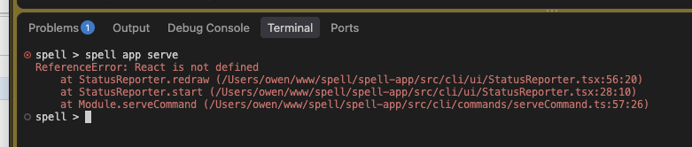

Owen's test run, 2026-10-22 23:32: T1 failed.

The cause: spell app serve stops with "React is not defined" as its progress screen first draws. The
Solid upgrade didn't cause it. The kit's spell command has run spell-app's commands this way since the
repo split's one-src/ phase (epic
repo-split P14, 2026-10-21).
spell command runs every repo's commands through tsx, with the kit's node settings.
Those settings ask for React's JSX, for spell-app's terminal screens.
tsx applies a settings file only to the files that file lists. The kit's list names only the
kit's folders, so spell-app's screens get the default JSX, which expects a global React.
spell command does throws the same error.
serve, watch, the REPL and the project pickers (8 files in spell-app's command-line
folder). It only shows in a terminal. Piped output, as in CI, draws no screen, so tests didn't catch it.
spell command's settings stay as they are.
spell app serve draws again."try again"
Fixed on main by the repo-split epic, which found the same cause (its I69, commit
72a0147), and merged into this worktree.
spell command now runs every repo's code under a settings file that covers every folder (tsconfig.tsx.json), so spell-app's terminal screens get React's JSX again.